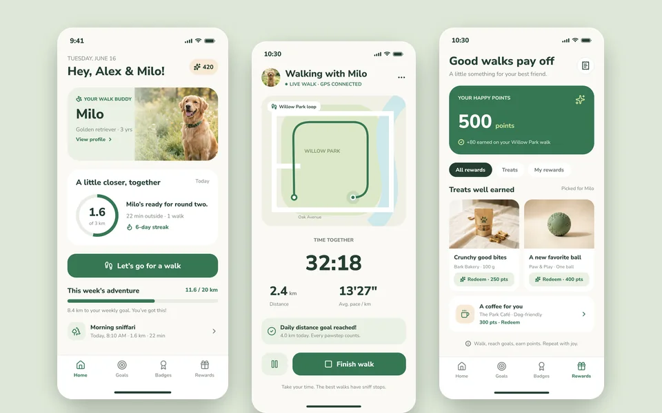
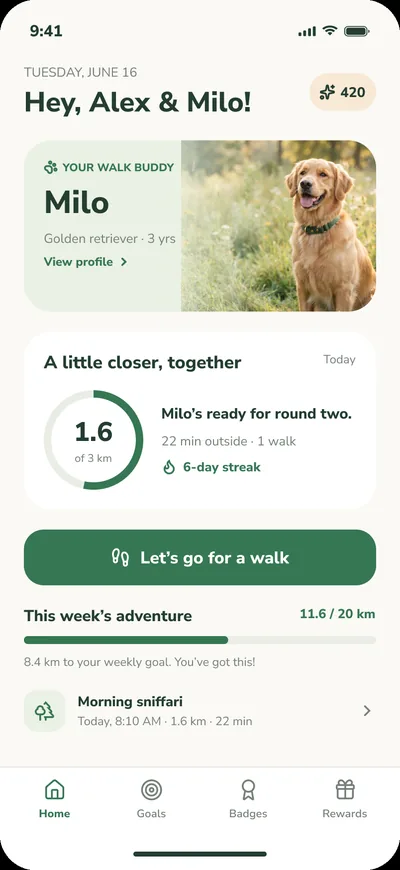
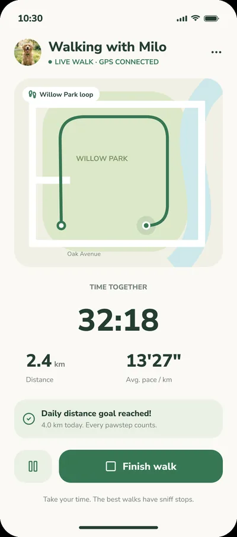
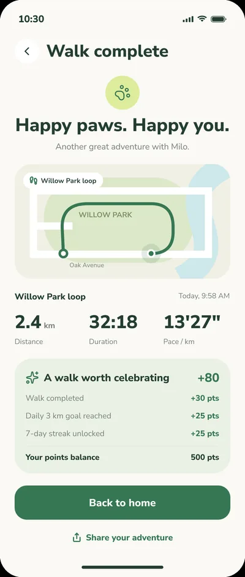
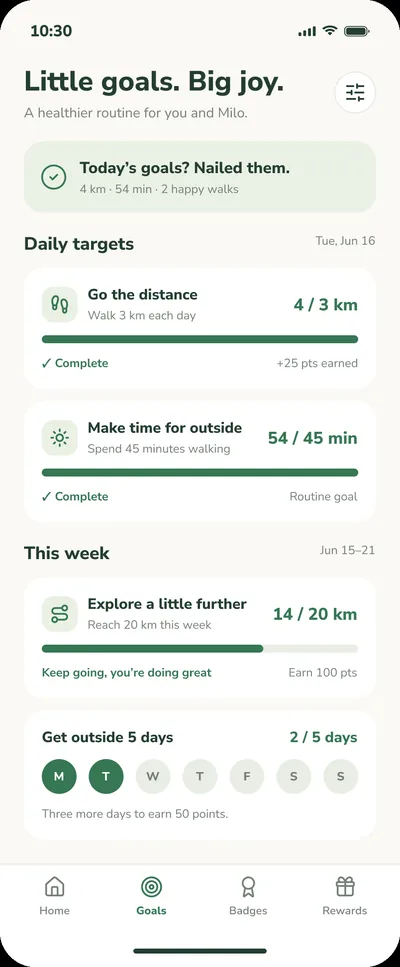
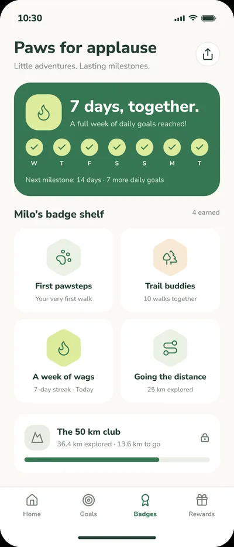
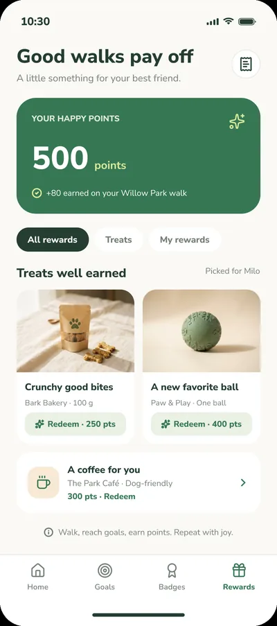

UI/UX design · Dog walking app design
Walkies
A mobile app design for dog owners that turns everyday walks into small wins, with live walk tracking, goals, badges and rewards.
- Role
- UI/UX design
- Type
- UI/UX design
- Status
- Figma design

The screens






The idea
A daily walk is easy to skip. The app makes the habit feel rewarding by showing progress, celebrating small wins and never nagging.
A calm green and cream palette, a friendly voice and photography of the dog keep it warm instead of feeling like a fitness tracker.
What stands out
- A home screen with the dog front and centre, a progress ring for today and one big “Let’s go for a walk” button.
- An active-walk screen with a route map, live timer, distance and pace, and a clear finish button.
- Daily and weekly goals with progress bars, and a points breakdown after every walk.
- A streak, a badge shelf and a rewards screen where points turn into treats and perks.